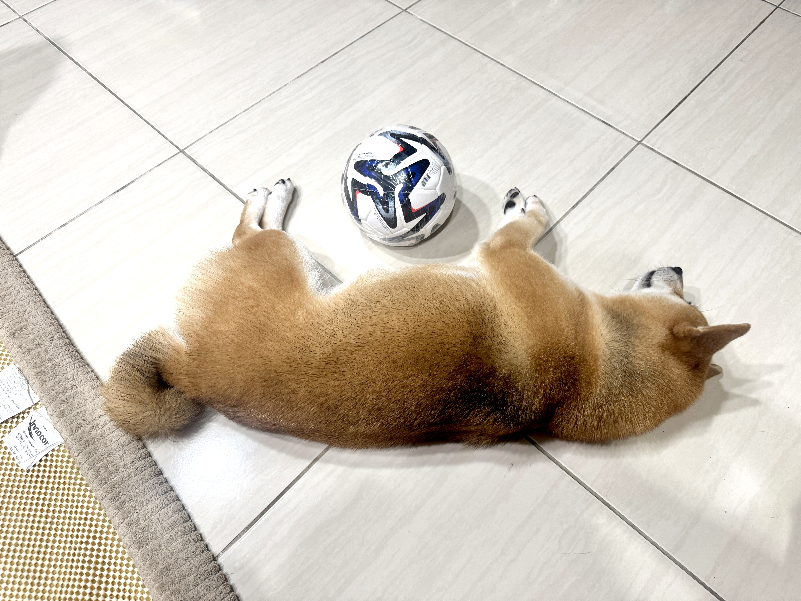

超愛睡覺，睡就對了。
人類辛苦工作上班，我努力睡覺等家人回家，我很幸福，每天吃肉肉度日！颱風天是可以在家上廁所啦，但出門也蠻好玩的呀（跳）～
綠色是阿兵，柴犬是阿勾！

人類辛苦工作上班，我努力睡覺等家人回家，我很幸福，每天吃肉肉度日！颱風天是可以在家上廁所啦，但出門也蠻好玩的呀（跳）～
在公園看到臘腸狗，他們好長喔！今年萬聖節我也當當看很長的狗狗吧，阿兵一定也希望我能活很久很久，這樣才能一起去超多地方玩耍<3
聞到肉肉的味道...人類在幫我準備晚餐了，一起來看看我都吃什麼。